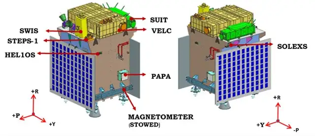

THE FIRST OBSERVATORY-CLASS SPACE-BASED SOLAR MISSION FROM INDIA
Aditya-L1 is the first space-based observatory-class Indian solar mission to study the Sun. The spacecraft is planned to be placed in a halo orbit around the Lagrangian point1 (L1) of the Sun-Earth system, which is about 1.5 million km from the Earth. A satellite placed in the halo orbit around the L1 point has the major advantage of continuously viewing the Sun without any occultation/eclipse. This will provide a greater advantage of observing the solar activities continuously. The spacecraft will carry seven payloads to observe the photosphere, chromosphere, and the outermost layers of the Sun (the corona) using electromagnetic and particle detectors. Using the special vantage point of L1, four payloads will directly view the Sun and the remaining three payloads will carry out in-situ studies of particles and fields at the Lagrange point L1. The suit of Aditya L1 payloads are expected to provide most crucial information to understand the problems of coronal heating, Coronal Mass Ejection, pre-flare and flare activities, and their characteristics, dynamics of space weather, study of the propagation of particles, fields in the interplanetary medium, etc.
The spacecraft carries seven scientific payloads for systematic study of the Sun. All payloads are indigenously developed in collaboration with various ISRO Centres.
Solar Ultra-violet Imaging Telescope to image the Solar Photosphere and Chromosphere in near Ultra-violet (UV) and, to measure the solar irradiance variations in near UV. The payload is developed by Inter University Centre for Astronomy and Astrophysics, Pune in close collaboration with ISRO.
Visible Emission Line Coronagraphis is the prime payload onboard Aditya-L1. It is designed as a reflective coronagraph with a multi-slit spectrographdesigned to study solar corona and dynamics of coronal mass ejections. The payload is developed by Indian Institute of Astrophysics, Bengaluru in close collaboration with ISRO.
Aditya Solar wind Particle Experiment and Plasma Analyser Package for
Aditya payloads are designed to study the solar wind and energetic
ions, as well as their energy distribution. ASPEX is developed at
Physical Research Laboratory, Ahmedabad.
The ASPEX payload comprises 2 subsystems: SWIS and STEPS.
SWIS (Solar Wind Ion Spectrometer) is a low-energy spectrometer that
is designed to measure the proton and alpha particles of the solar
wind.
STEPS (Suprathermal and Energetic Particle Spectrometer)is a
high-energy spectrometer that is designed to measure high-energy ions
of the solar wind.
PAPA is developed at Space Physics Laboratory, Vikram Sarabhai Space
Centre, Thiruvananthapuram. It is designed to understand solar winds
and its composition and, do mass analysis of solar wind ions
Solar Low Energy X-ray Spectrometer and High Energy L1 Orbiting X-ray Spectrometer are designed to study the X-ray flares from the Sun over a wide X-ray energy range. Both these payloads are developed at U R Rao Satellite Centre, Bengaluru. The spacecraft carries seven scientific payloads for systematic study of the Sun.
Magnetometer payload is capable of measuring interplanetary magnetic fields at the L1 point. The payload is developed at Laboratory for Electro Optics Systems, Bengaluru.
All payloads are indigenously developed in collaboration with various ISRO Centres.
L1 is Lagrange point between the Earth and Sun. For a two-body
gravitational system, the Lagrange Points are the positions in space
where a small object tends to stay, if put there. These points in
space for a two-body system such as Sun and Earth can be used by the
spacecraft to remain at these positions with reduced fuel consumption.
Technically at Lagrange point, the gravitational pull of the two large
bodies equals the necessary centripetal force required for a small
object to move with them. For two-body gravitational systems, there
are total five Lagrange points, denoted as L1, L2, L3, L4, and L5. The
Lagrange point L1 lies between Sun-Earth line. The distance of L1 from
Earth is approximately 1% of the Earth-Sun distance.
➡️ First time spatially resolved solar disk in the near UV band.
➡️ CME dynamics close to the solar disk (~ from 1.05 solar radius) and
thereby providing information in the acceleration regime of CME which is
not observed consistently.
➡️ On-board intelligence to detect CMEs and solar flares for optimised
observations and data volume.
➡️ Directional and energy anisotropy of solar wind using multi-direction
observations.